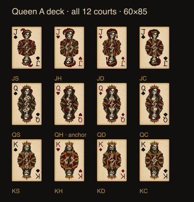

Ночной стол Día de Muertos. Костяные карты ведут взгляд; состаренный металл держит доску; маригольд, фуксия и бирюза дают живые акценты. Фон остаётся темнее карт.
Этап 1: предложение направления. В игру ничего не установлено. Продолжение — после вашего «ок».
Шесть экранов рядом с текущей игрой
Слева — актуальная Pixi-игра, справа — статический макет. Карты и выплаты совпадают. Снимки сделаны во время живого count-up; в предложении показано итоговое значение.
HUD сохраняет текущую геометрию: на desktop SPIN справа, в действующем портретном варианте — по центру. Balance, Bet и Win используют Oswald. Лампочки Hand pays остаются; Royal Flush в покое не подсвечен. Turbo и Autospin используют исходные пути общих иконок.
Десять цветов, каждый со своей задачей
Тёмная база не осветляется целиком. В покое цвет живёт в бумаге и цветах; выигрыш добавляет тёплую кромку; FS переносит бирюзу на эмаль рамки и плашек.
Материалы, построенные в SVG
Форма, фаска и направленный блик. Без растровых вставок, трассировки, шумовой текстуры и диагональной штриховки.
Состаренное золото
Тёмная внутренняя грань, светлая верхняя и левая фаска. Возраст передаётся крупными изменениями тона и конструкцией металла, а не зерном.
Плоский краситель, видимая кромка, прорези маской. У черепа две глазницы, носовая полость и отдельные зубы. Флажок — бумага без металлического блеска; фаска ему не нужна.
Широкий матовый переход и две редкие кривые складки. Никакой фаски у ткани; объём — в складке и спаде света. Свечи и цветы заполняют низ сцены по теме.
Верх и левая грань ловят свет. Низ и правая грань темнее. Пламя — небольшой самостоятельный источник; без ореола на всех элементах.
1 / 2 / 3, радиусы 4 / 8
1 — гравировка и блик; 2 — контур; 3 — несущая рамка и кромка выигрыша. Радиус 4 — карты и малые плашки, 8 — металл и крупные панели. Система в design-space, масштабируется вместе с формой; круглые общие HUD-контролы сохраняют геометрию.
MUERTA POKER A K Q J 10
Barrio
Логотип, крупные заголовки и индексы карт. Не используется в выплатах, Balance, Bet, Win и мелких подписях.
BALANCE 999999.00 BET 1.00 WIN 1.00 FREE SPINS LEFT 9
Oswald
Один UI-шрифт: цифры, счётчики, табло, кнопки, подписи рук. Всего два семейства, уже есть локально. Размер и материал создают иерархию без нового шрифта.
Читаемость без увеличения
Это небольшие ручные векторные исследования формы для макета, а не готовая новая колода. Queen A остаётся утверждённым референсом для последующего детального redraw. Жнец не получает ранг и масть.
PNG-исходники + SVG с встроенным растром; индексы отдельно векторные. Все дворы утверждены после исправления K♥/K♦. При 60×85 мелкие штрихи теряются. Сохранить референсы и индексы, вручную перестроить иллюстрации. В игре этого набора нет.
Тузы и рубашка
Четыре туза без овала; SVG-масти, но бумага растровая. Рубашка с двумя косами — PNG. Утверждения сохранены. Геометрию использовать как ориентир, новый материал — в ручном SVG.
Рамка
RGBA 1048×1501 и восемь секций для nine-slice. Золотые углы полезны, но диагональный узор на рейках запрещён новым заданием. Нет ручного SVG и win/FS-слоёв. Не устанавливать как есть.
Текущая игра
52 raster-лица, два Joker и рубашка: 2.98 MB. Четыре SVG-фона: 204 KB. Дворы неоднородны, общий красный/фиолетовый фон конкурирует с доской. Сохранить для будущего сравнения, не изменять на этапе 1.
Показать прежние придворные и рамку

Прежние дворы, 60×85Рамка: требуется переработка реек
Проверка предложения
Растровые артефакты В предложениях нет <image> и raster-data URI. Иллюстрации заданы путями. Детальная анатомия всех 12 будущих дворов пока не проверена: это следующий этап.
Избыточные эффекты Нет фиолетового неона, стекла, мягкой тени под каждой картой и свечения на всём. Выигрыш — металл кромки; FS — эмаль.
Общий строй Один свет сверху слева, толщины 1/2/3 и радиусы 4/8. Исходные круглые HUD-контролы и пути Turbo/Autospin сохранены.
Иерархия Карты светлее сцены; выигрышные линии получают золотой кант, остальные карты темнее. Royal Flush без постоянной подсветки. Все руки в статическом финале разрешены.
Текст В предложении весь текст — SVG text с локальными шрифтами; ранги и масти векторные. Для live-интеграции используется существующий язык и social mode, новых игровых формулировок не введено.
Защищённые файлыПроверка хэшей перед завершением.До / после. Аудио, математика, кошелёк, тайминги, Godot и live-ассеты не изменялись.
Это визуальный гейт. Производительность новых текстур, атласы 1×/2×, 1366×768 и 360×740, GIF, Stake-яркость и игра на реальном телефоне проверяются после утверждения и интеграции. Обещания 60/30 fps по статическим макетам не делаю.